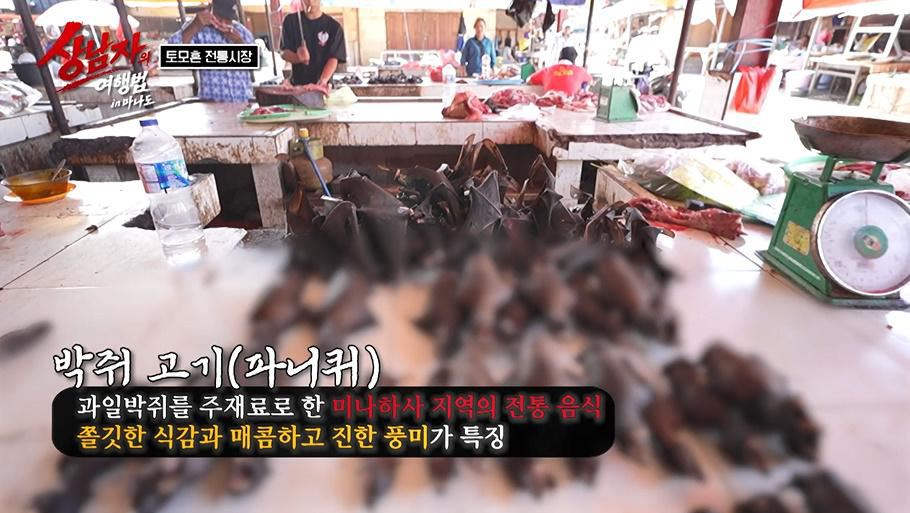
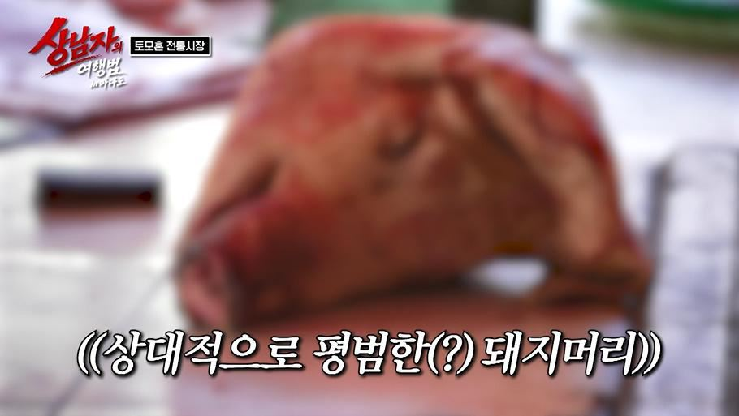
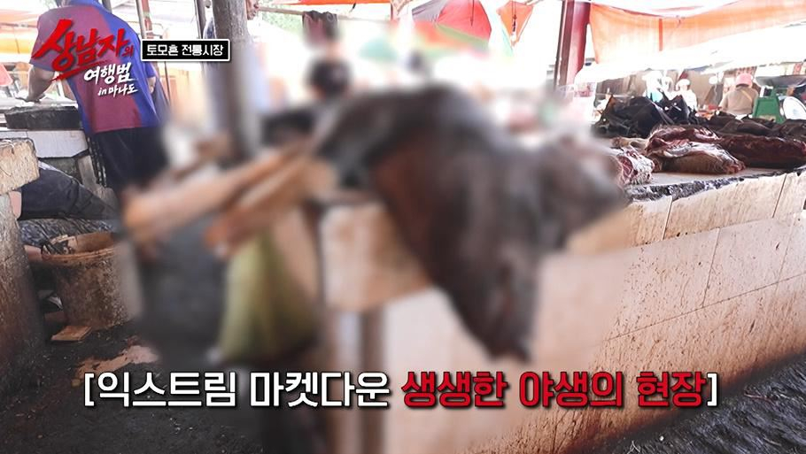
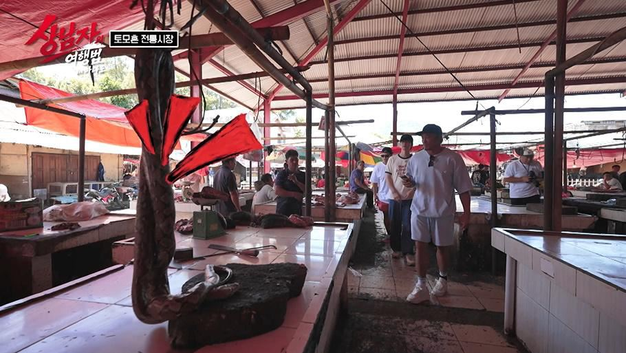
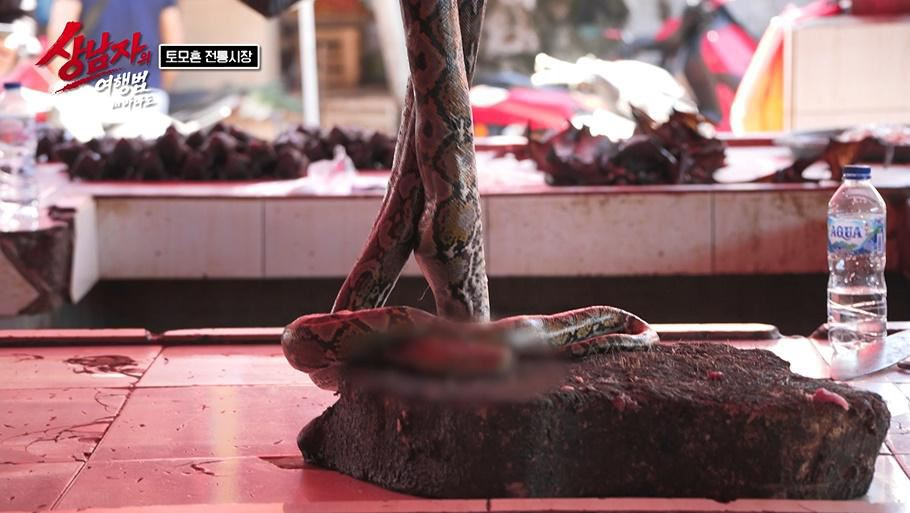
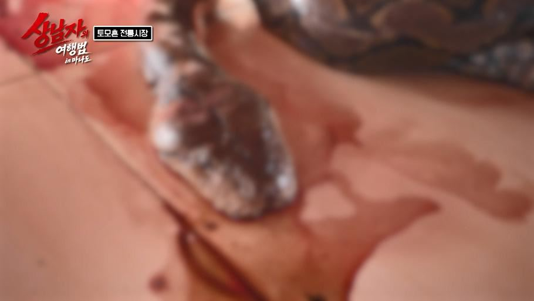
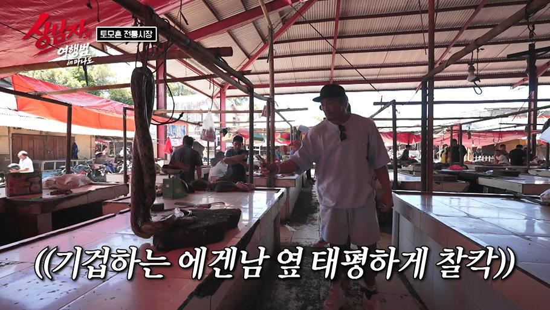

와 나였으면 저거 보자마자 거품물고 기절함







와 나였으면 저거 보자마자 거품물고 기절함
구워서 먹으면 괜찮지 않을까...
저거 손대는 순간 좆될수도 잇다는거 인지해하고 사가야됨 ㅋㅋ
절대 먹지마!!!
불로 구워버리면 뭐 ㅋㅋㅋ
어흐
저런 곳에서 질병이 시작 하는거겠지?
무섭긴 한데 한 번 쯤 도전해보고 싶기는 하다
뱀이랑 악어는 한번 먹어 보고 싶음
닭고기 맛 나더라
조상이 같음
개구리 뒷다리도 닭고기 맛 나던데
닭 얘는 정체가 뭐야
어류와 파충류 중간 어디쯤?
곤룡
악어 쫄깃탱탱한 닭고기 느낌
양념맛 빼면 슴슴하지 않을까
뱀은한번 먹어봤는데 바싹익혀서 그런가 소고기 육포? 같은 맛났음.
악어는 고기와 어묵의 중간 정도 느낌
악어 닭고기같던데 쫄깃했음
세상 좋아진거지 문명 아니면 저것도 못먹어서 나무 껍질이나 씹었어야됨
질병 걱정만 없으면 다 먹어보고 싶기는 함
동남아 여행 갈때마다 길거리에서 파는 벌레류들 먹어보는 편인데,
지금까지 전갈, 거미, 번데기? 먹어봄
전갈 거미 둘 다 식감 JOAT 아니냐
일본에 유명한 괴식 음식점 있던데 여기 한번 도전해보는건 어때?
https://youtu.be/OZ4HAGa88lo?si=5eY5qkWkqIK2mUjH
뱀이나 박쥐 정도면 기생충이나 바이러스만 해결하면 먹어보고 싶음
뱀 고기 약간 수율 좋아보이지 않냐
에겐자식
없이살때 궈먹으면 다 단백질이지 뭐 뱀이나 박쥐나
코로나
일주일만 쫄쫄 굶겨도 개걸스럽게 쳐먹을거면서
어릴때 어디 캠핑갔다가 다른 사람이 뱀잡은거 구워줘서 먹어본적이 있는데
직화에 구운 뱀은 놀랍게도 말린 오징어 구운거랑 비슷한 맛이 나더라
굳이 찾아 먹을 이유가없어서 그렇지 기회되면 먹어보고싶긴함
존나크네 저걸 식용으로 먹는다고?
뭔가 동물원 같은데 보내는게 돈 될거같은데 그런 시장은 또 없나보네
빅쥐는 병때문에 찝찝하고 뱀은 먹어보고 싶다
비린내나는 닭고기라던데
베트남 리조트 부페서는 악어도 먹게끔 등까놨드라.
진짜 먹고말고는 비위문제일 듯
상남자특. 악어 박쥐 뱀 안무서워함
근데 바퀴벌레는 먹으라하면 기겁함
갑각류 알레르기가 있어서 아쉽게도 바퀴벌레는 못먹겠더라
속안좋네
kbs에서 이번에 저런거 3부작 만드는거 있던데 예고편에 나오는 새끼호랑이 담금주 보고 경악을 금치못했다 진짜 금수새끼들도 아니고 그딴걸 왜쳐먹어
뭔 담금주????? 시발 인간이길 포기했나 안그래도 멸종위기종인데
새끼 호랑이가 통으로 술에 들어가있더라 ㅆ..
불로 충분히 익혀먹으면 벌레만 아나면 난 다 가능한디
박쥐가 좆되는게
체온은 높아서 자기는 웬만해서 바이러스 면역 잇는데 지들끼리 습하고 좁은 동굴에 모여서
살기때문에 온갖 병균 서로 공유하고잇음
박지굴=거의 사천당가기 때문에
잘못걸리면 좆될수잇다함
걍 박쥐같은거는 가까이 안하는게 제일임
박지 이놈 내가 그럴 줄 알았다
네이팜 터트리면 걍 맛있어지려느
저런거 보여주면서 모자이크 하는거 진짜 싫다....
다큐에서도 모자이크나오는거 싫어
노모만 좋아하는 개붕이
박쥐고기는 먹어도 괜찮은거 맞나? 바이러스 씹노답일텐데